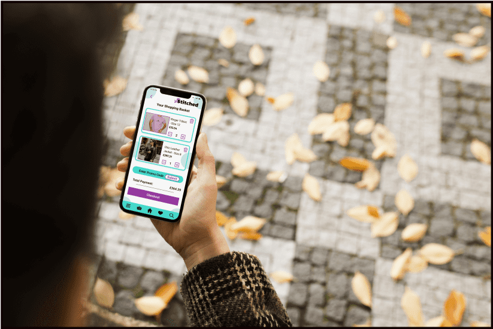
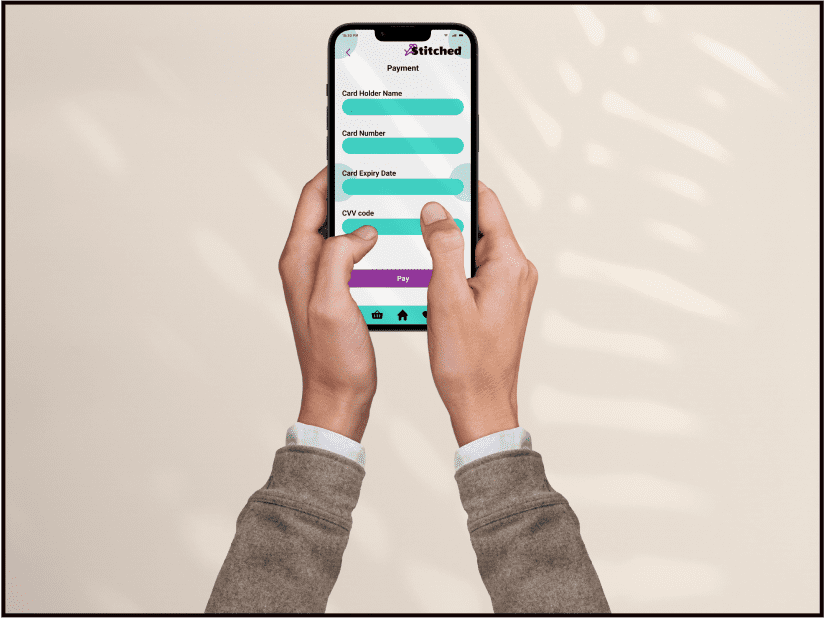
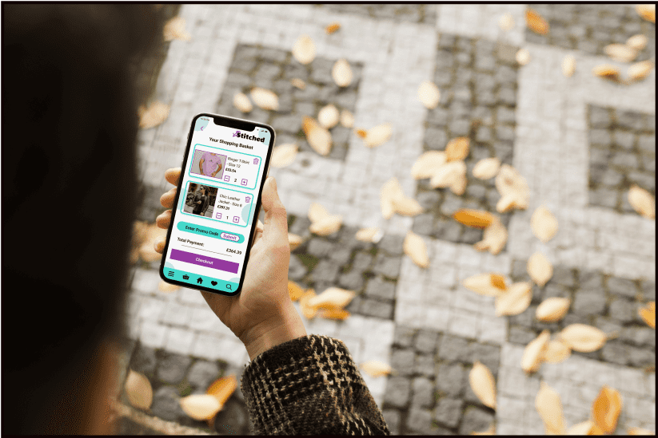
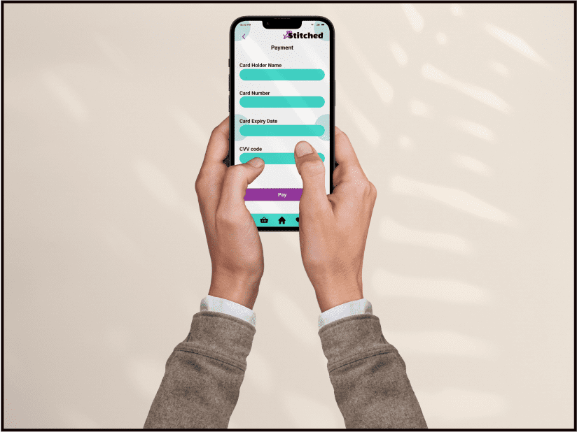

Stitched

This project is about designing a web application for mobile phones which allow users to buy and sell vintage clothing. It includes 10 high-fidelity wireframes, all with key features added onto each. Also, it has 6 key functionalities, in total, for the users to interact with. Other clothing apps were researched and analysed to study the functionalities they offer. These mobile designs are aimed at the 25 to 34 year old demographic. A fun and vibrant colour palette was used to appeal to a younger audience.
My Process
Objective
To design the UI for the mobile version of a vintage clothing e-commerce app and prepare for handover to developers.
Low-fi wireframes
Balsamiq Wireframes was used to arrange the placement of different components and elements used for each page.
Mid-fi wireframes
Figma was used to edit the arrangement of the selected components and elements used for each page. Real text was added to buttons, titles, sub-headings, paragraph sections, etc.
Hi-fi wireframes
Figma was used to add colour to the wireframes, using a colour scheme from the style guide. The style guide's typography was also applied at this stage.

Mockups
These mockups illustrate how the devices look on mobile phones when users are on the app at various locations.
 



Conclusion
Creating a vintage clothing app, for 25 to 34 year olds, was a success. Using Balsamiq wireframes allowed for rapid sketches of low fidelity wireframes to be created. Figma was useful at adding real text and a colour scheme to the mobile screens' mid fidelity wireframes. All the key functionalities were implemented.